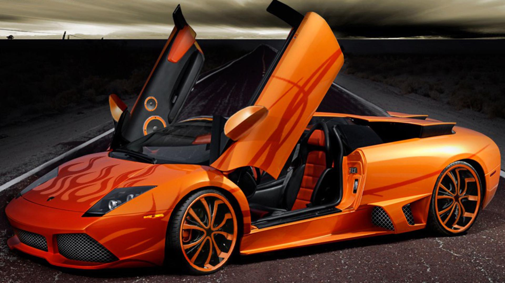

Lamborghini

Lamborghini is an Italian brand and manufacturer of luxury sports cars and, formerly, SUVs, which is owned by the Volkswagen Group through its subsidiary brand division Audi. Lamborghini's production facility and headquarters are located in Sant'Agata Bolognese, Italy. In 2011, Lamborghini's 831 employees produced 1,711 vehicles.
Ferruccio Lamborghini, an Italian manufacturing magnate, founded Automobili Ferruccio Lamborghini S.p.A. in 1963 to compete with established marques, including Ferrari. The company gained wide acclaim in 1966 for the Miura sports coupe, which established rear mid-engine, rear wheel drive as the standard layout for high-performance cars of the era. Lamborghini grew rapidly during its first decade, but sales plunged in the wake of the 1973 worldwide financial downturn and the oil crisis. The firm's ownership changed three times after 1973, including a bankruptcy in 1978. American Chrysler Corporation took control of Lamborghini in 1987 and sold it to Malaysian investment group Mycom Setdco and Indonesian group V'Power Corporation in 1994. In 1998, Mycom Setdco and V'Power sold Lamborghini to the Volkswagen Group where it was placed under the control of the group's Audi division.
New products and model lines were introduced to the brand's portfolio and brought to the market and saw an increased productivity for the brand Lamborghini. In the late 2000s, during the worldwide financial crisis and the subsequent economic crisis, Lamborghini's sales saw a drop of nearly 50 percent.
Lamborghini produces sports cars and V12 engines for offshore powerboat racing. Lamborghini currently produces the V12-powered Aventador and the V10-powered Huracan.